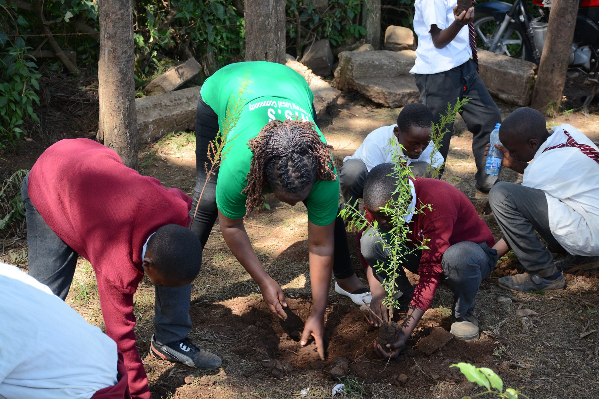
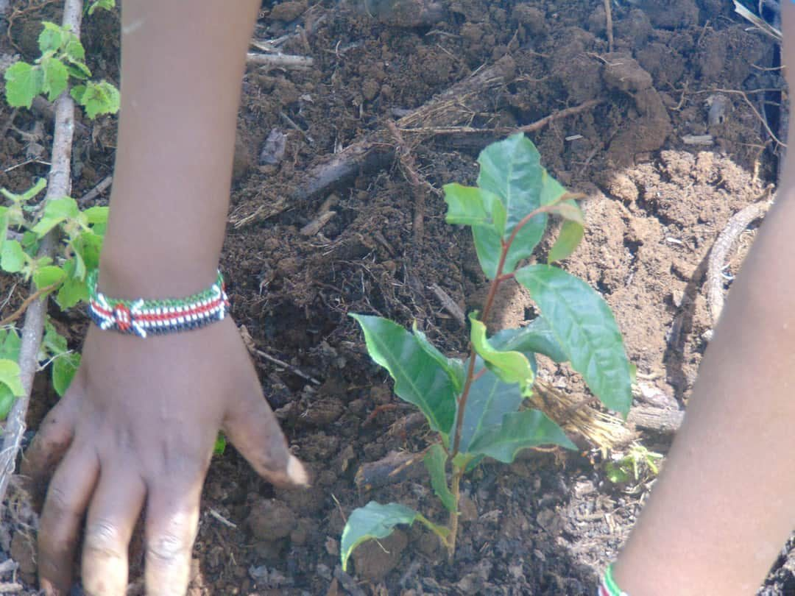
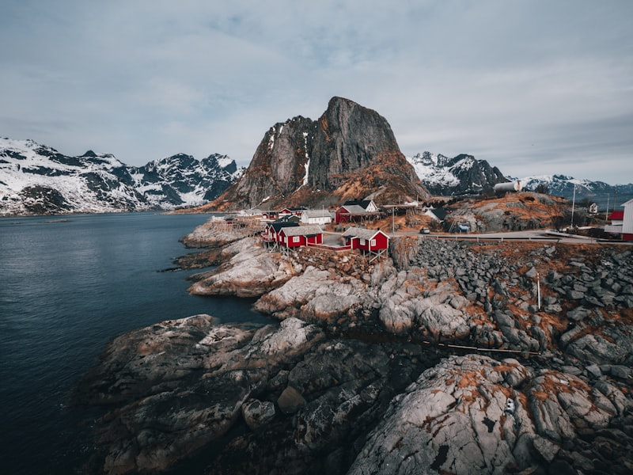

01
Biocultural Restoration
Reviving landscapes by weaving together culture, community, and ecology. We honor indigenous knowledge, restore sacred spaces, and strengthen the bonds between people and the natural world.

Where communities turn ideas into solutions.
Our work brings restoration, food systems, cities, seeds, livelihoods and enterprise into one living practice.
Reviving landscapes by weaving together culture, community, and ecology. We honor indigenous knowledge, restore sacred spaces, and strengthen the bonds between people and the natural world.

Farming with nature, not against it. We support farmers, women, and youth to embrace agroforestry, soil health, and climate-smart practices that produce food while regenerating ecosystems.

Greening cities for cleaner air, cooler streets, and thriving biodiversity, from rooftop gardens to city food forests where trees, people, and culture live side by side.

Guardians of tomorrow's harvest. We preserve indigenous seeds, document their cultural stories, and train communities in seed saving for food sovereignty and climate resilience.

From trash to treasure. We tackle plastic waste, promote composting, and innovate with recycling so waste becomes soil, art, and building material.

Protecting pollinators while creating practical income pathways for communities stewarding farms, forests, and restored landscapes.

A practical space for training, testing, documenting, and scaling local innovations that communities already know they need.

Helping local ideas become dignified livelihoods, from seed banks and compost ventures to restoration services and circular enterprises.